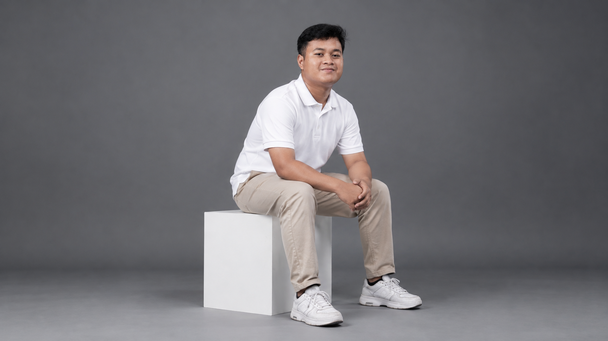
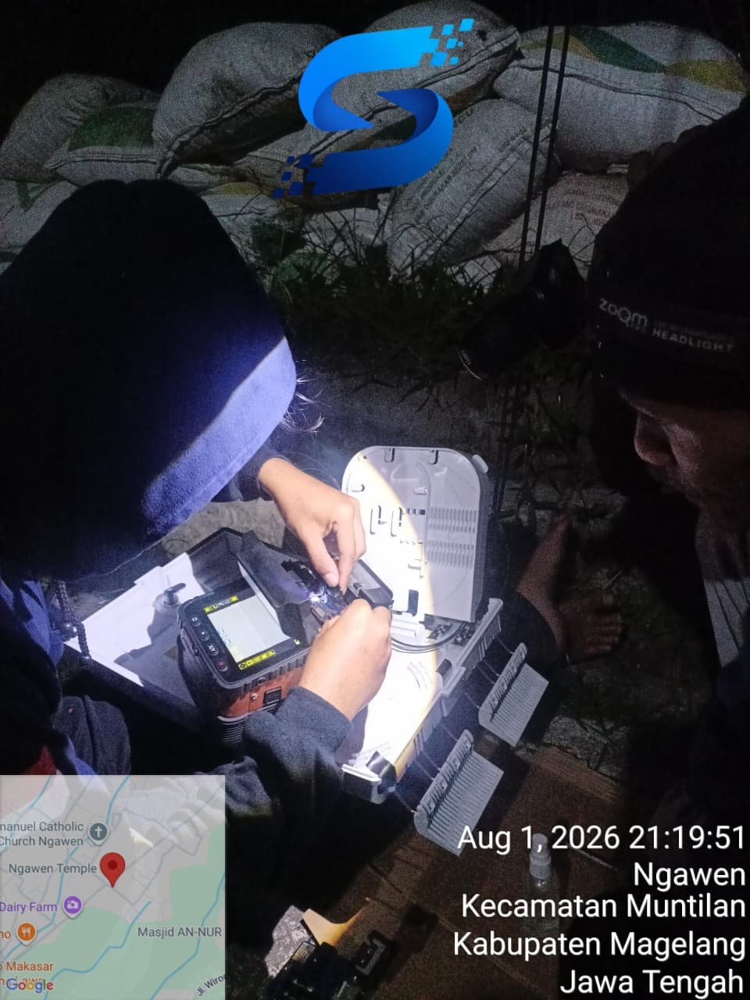
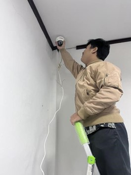
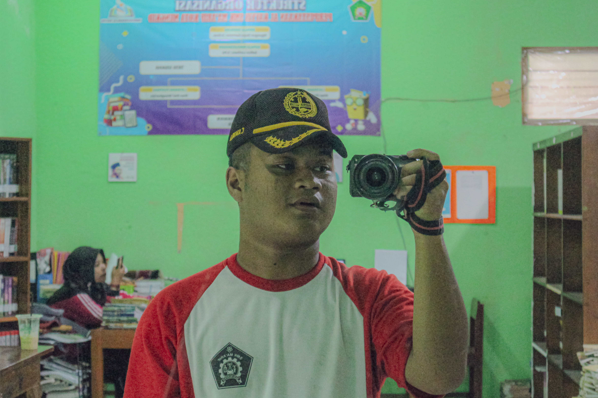
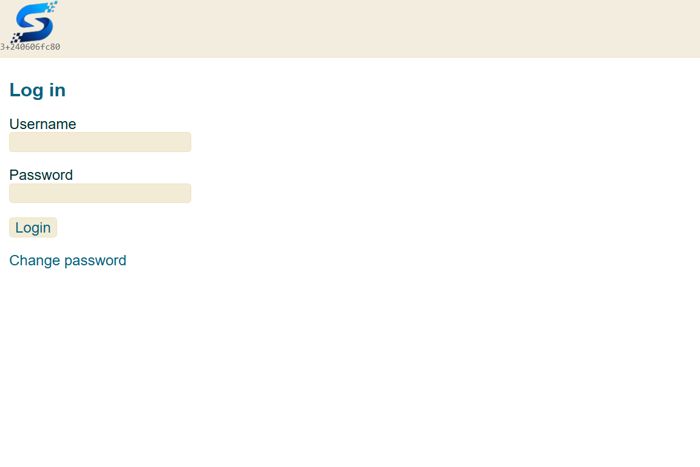

Halo, saya Hameed. Saya lulusan tahun 2026 SMK jurusan Teknik Jaringan Komputer dan Telekomunikasi (TJKT). Sejak duduk di bangku SMP, saya bercita-cita menjadi pengusaha di bidang penyedia layanan internet dan terus mengembangkan pengetahuan serta keterampilan saya di bidang jaringan komputer dan telekomunikasi.
Saya adalah pribadi yang memiliki rasa ingin tahu tinggi, senang mempelajari hal-hal baru, dan tertarik pada perkembangan teknologi, khususnya di bidang jaringan komputer dan internet. Saya menikmati proses belajar, memecahkan masalah, serta terus berusaha meningkatkan kemampuan untuk menjadi pribadi yang lebih baik setiap harinya.
Pemahaman kuat tentang fundamental TCP/IP. Andal dalam mengonfigurasi Router (MikroTik), Access Point, dan mengoptimalkan lalu lintas data jaringan.
Siap eksekusi langsung di lapangan. Terbiasa menangani instalasi jaringan fisik, mulai dari manajemen kabel LAN (UTP) hingga penarikan jalur Fiber Optik.
Merancang website praktis dan fungsional. Mampu membuat landing page, sistem administrasi ringan, hingga website profil untuk kebutuhan toko dan usaha kecil.

Sejak duduk di bangku SMP saya memiliki keinginan besar berwirausaha Mikro Provider atau sering disebut RT/RW Net. Sehingga saat ini saya memiliki pengetahuan yang cukup baik untuk dasar dasar networking seperti TCP/IP, mengelola traffic, dan memberikan pelayanan terbaik kepada calon ataupun pelanggan.

Saya mendapatkan banyak ilmu dari Diskominfo Kabupaten Magelang untuk instalasi jaringan LAN menggunakan Akses Point dari Ruijie, MikroTik, Ubiquiti, dll. Saya juga mendapatkan pengalaman langsung dalam menelusuri permasalahan dalam jaringan LAN seperti Akses Poin tidak dapat meneruskan IP dari server. Selain itu saya juga mendapatkan pengalaman menerima tamu, mencatat tamu masuk, meneruskan pesan tamu dll dibagian resepsionis.

Sejak duduk di bangku SMP saya sangat menyukai fotografi dan videografi. Mulai dari memotret hal random hingga mengabadikan momen yang tidak akan terulang dua kali. Selain memotret saya juga memiliki pemahaman untuk editing foto color grading.

Walau saya masih belum mahir dibidang instalasi server, saya berhasil instal dan sudah aktif digunakan untuk Mikro Provider yang saya sedang jalani.